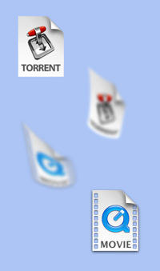
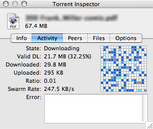

Welcome to Transmission!
Transmission is a BitTorrent client. It is used for peer to peer filesharing over the internet. BitTorrent is a fast way of transferring files, because everyone who downloads must also upload to others. This means speeds are only limited by the number of people connected to a given torrent - the more people the better!
How do I use it? |
|
|  |
You'll need to download a torrent file (extension .torrent). These are commonly found at 'tracker' websites. Torrent files contain information about the actual file you want to download (eg a movie). Once you have the torrent file, open it in Transmission. You can also set Transmission to watch for torrent files and then open them automatically via Preferences >> Transfers >> General. It is good etiquette to 'seed' the file for a while (ie leave it uploading) once your download is complete. You can set a default ratio to automatically seed to, and then pause. This can be adjusted in Preferences >> Transfers >> Management, or in real time using the Action menu. |
Can I schedule my transfers? |
|
 |
Yes, by using 'Speed Limit Mode'. Simply go to Preferences >> Bandwidth, and then set both the speed you would like Transmission to be limited to, as well as the period of time you would like the limits applied. When Speed Limit Mode is enabled, the turtle will be illuminated in blue. |
Can I queue my transfers? |
|
 |
Yes, you can queue seeding and/or downloading transfers via Preferences >> Transfers >> Management. The queue system is very simple: You start and pause transfers as usual, but if you're over the queue limit starting a transfer will instead make it "Waiting to download..." You can force a transfer to start by holding down option and clicking the orange resume button; or by using the Transfers menu item "Resume Selected Without Wait". |
Where can I find more detailed information on my torrents? |
|
|  |
Click the Inspector icon, or simply double-click any transfer in the main window. The inspector gives you:
|